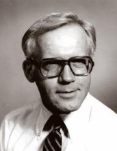

Please note: the AAS Obituaries are temporarily being hosted on this website while their full content is being ingested into the PubPub publishing platform newly adopted by the Bulletin of the American Astronomical Society. When the migration is complete, your existing links will take you to the final, migrated content. Contact peter.williams@aas.org with any questions.
Richard G. Teske (1930-2016)
Richard G. Teske, who died in June 2016 at the age of 85, was born on 16 August 1930 in Cleveland, Ohio, served in the U.S. Army during the Korean war, and received his B.S. from Bowling Green State (Ohio) in 1952, M.S. from the Ohio State University in 1956, and Ph.D. in astronomy from Harvard in 1961. During his time at Harvard, Teske was employed by the Smithsonian Astrophysical Observatory in tracking the first U.S. artificial satellite, starting a career that would use some of the earliest spacecraft data.
Teske came to the University of Michigan in 1960 as an Instructor in astronomy. He was promoted to Assistant Professor in 1962, Associate Professor in 1967, and Professor in 1977. In 1962, Teske was principal investigator for a solar x-ray detector flown on the third Orbiting Solar Observatory (OSO III), one of the earliest space-based experiments undertaken by an American university. The University of Michigan’s Faculty History Project reports that “the OSO III x-ray experiment provided the first comprehensive details and statistical data about soft x-ray emission from solar flares, and the results were incorporated into many publications and two doctoral theses, thus exposing many graduate students to space research at an early point in its history.”
In the latter part of his career, Teske embarked on a study of supernova remnants (SNR), making use of his knowledge of solar physics, and in particular the coronal [Fe] lines, to probe conditions near the SNR blast wave. He served as interim director, then as director, of the Michigan–Dartmouth–McGraw-Hill Observatory, on Kitt Peak, in Arizona, from 1986 until shortly before his retirement in 1993. Teske served as a consultant to NASA's Solar Physical Subcommittee of the Astronomy Missions Board and on various NASA satellite payload selection committees and peer review panels. He remained very active after retirement, chairing the University of Michigan Literature, Science, and the Arts scholarship committee, writing columns on astronomy, and contributing astronomy materials to the state’s high school classrooms. He had a great love of the outdoors, and spent much time in Michigan and Europe hiking, camping and skiing with his wife of 40 years, Yvonne. His son, Steven, predeceased him.
Obituary written by: Charles Cowley (Univ. of Michigan)
Additional links:
- http://www.ompsfuneralhome.com/obituary/richard-g-teske/
- http://www.lib.umich.edu/faculty-history/faculty/richard-g-teske/memoir
BAAS Citation: BAAS, 2016, 48, 006